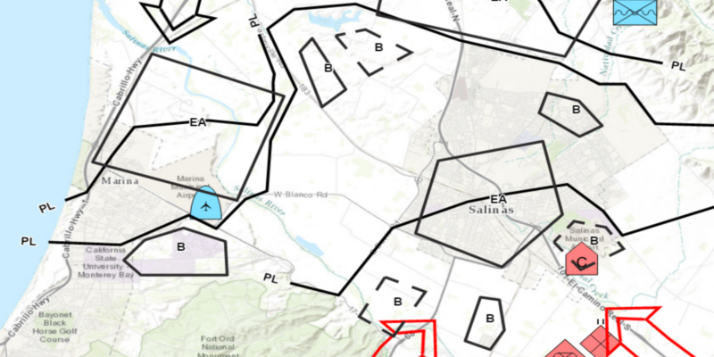

Demonstrates how to apply a dictionary renderer to a feature layer and display mil2525d graphics. The dictionary renderer creates these graphics using a mil2525d style file and the attributes attached to each feature within the geodatabase.

To apply a DictionaryRenderer and display mil2525d graphics:
Geodatabase(geodatabasePath).
Geodatabase.loadAsync().
SymbolDicitonary, SymbolDictionary(specificationType).
DictionarySymbol.loadAsync()Geodatabase.addDoneLoadingListener().GeodatabaseFeatureTable from geodatabase, Geodatabase.getGeodatabaseFeatureTables().FeatureLayer from each table within the geodatabase, FeatureLayer(GeodatabaseFeatureTable).
FeatureLayer.loadAsync()FeatureLayer.addDoneLoadingListener.Envelope from each layer.
Viewpoint of the map view, MapView.setViewpoint(new Viewpoint(Envelope))Map.getOperationalLayers().add(FeatureLayer).DictionaryRenderer(SymbolDictionary) and attach to feature layer, FeatureLayer.setRenderer(DictionaryRenderer).